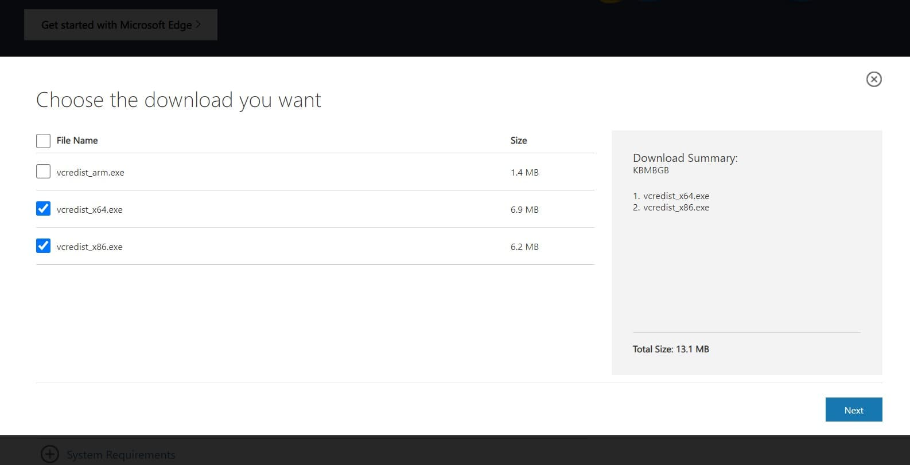
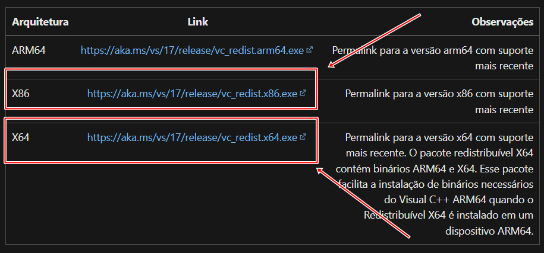

BAIXAR O THE SIMS 4 COMPLETO
Esse tutorial tem como objetivo ensinar a baixar o The Sims Updater de forma gratuita e usá-lo para baixar o jogo do zero, escolhendo as expansões que você desejar para sua jogatina.
O programa The Sims Updater (criado pelo Anadius) é um software que atualiza e/ou baixa o The Sims 4 e todas as expansões que você selecionar. Isso tudo automaticamente e de forma GRATUITA.
[Novo] Vídeos tutoriais atualizados 20/11/2022
Esse site não hospeda nenhum conteúdo ilegal,
sendo apenas um agregador de
links e vídeos tutoriais.
Esse tutorial tem como objetivo ensinar a baixar o The Sims Updater de forma gratuita e usá-lo para baixar o jogo do zero, escolhendo as expansões que você desejar para sua jogatina.
Esse tutorial tem como objetivo ensinar a baixar o The Sims Updater de forma gratuita e usá-lo para atualizar automaticamente o The Sims 4 pirata que já está instalado em seu computador.
Isso ocorre porque o Windows 7 não tem mais suporte da Microsoft e softwares de terceiros que foram usados para desenvolver o updater. Por sorte, existe uma forma de contornar esse problema. Será necessário instalar uma DLL manualmente e o Python 3.10 para Windows 7.
Siga o tutorial em vídeo abaixo.
Essa DLL é um arquivo essencial para executar o jogo pirata. Muitas vezes o próprio antivírus do computador acaba deletando esse arquivo, por suspeitar que ele seja um vírus (mas não é!).
Para solucionar, vá até a pasta “Bin”, onde você instalou seu The Sims 4 (acessamos essa pasta no tutorial para criar o atalho do jogo). E dentro dessa pasta, procure pelo arquivo anadius64.dll.
NÃO encontrei o anadius64.dll dentro da pasta “Bin”
Desative o seu antivírus, abra o Sims Updater e clique no botão “Update”, igual fizemos no tutorial. (Ele não vai baixar tudo novamente, só vai verificar se falta algum arquivo, no caso anadius64.dll e baixa-lo novamente). Verifique se o anadius64.dll apareceu dentro da pasta “Bin”, caso não apareceu, baixe através desse LINK e coloque ele dentro da pasta “Bin”, se apareceu é só executar o jogo e ser feliz!
Eu encontrei o anadius64.dll dentro da pasta “Bin”
Nesse caso, provavelmente você criou o atalho do jogo da forma errada (criou uma copia em vez de atalho). Dentro da pasta “Bin” tem o arquivo chamado Ts4x64, tente abri-lo, se o jogo abrir é certo que é problema no atalho e você só precisar criar um novo atalho. Se não abrir, desative o antivírus, abra o Sims Updater e clique no botão “Update”, igual fizemos no tutorial. (Ele não vai baixar tudo novamente, só vai verificar se falta algum arquivo, no caso anadius64.dll e baixa-lo novamente), após finalizar o processo, tenta abrir o jogo, provavelmente o problema foi solucionado.Isso ocorre porque seu sistema não tem uma biblioteca da Microsoft, que foi usada para criar o jogo. Para resolver o problema, será necessário a instalação dessa biblioteca no seu sistema, e os arquivos de instalação podem ser baixados diretamente do site da Microsoft, nesse LINK.
Dentro do site, clique no link da versão x86 e também da x64, baixe os dois arquivos e instale.
Reinicie sua máquina e o problema estará resolvido.
Isso ocorre porque seu sistema não tem uma biblioteca da Microsoft, que foi usada para criar o jogo. Para resolver o problema, será necessário a instalação dessa biblioteca no seu sistema, e os arquivos de instalação podem ser baixados diretamente do site da Microsoft, nesse LINK.
Dentro do site, clique no link da versão x86 e também da x64, baixe os dois arquivos e instale.
Reinicie sua máquina e o problema estará resolvido.
Assista esse vídeo aqui que resolve.
99% das vezes isso ocorre por conta do antivírus bloqueando o acesso do Sims Updater ao computador. Você pode desativar o antivírus temporariamente para realizar o tutorial. (lembre-se, mesmo que seu computador não tenha antivírus, o Windows vem com o Windows Defender por padrão).
Eu recomendo adicionar a pasta do Sims Updater e a pasta do The Sims 4 como exceções do
antivírus, isso fará que mesmo ele ativo, ele não implicará com o Sims Updater e os arquivos
do jogo.
Vídeo
ensinando a criar excções no Defender.
Esse é um problema que ocorre principalmente com quem está baixando o jogo pela primeira
vez.
O próprio Anadius criou um programinha bem simples. Só baixar o programa por esse
LINK,
executá-lo, escolher Português (Brasil) e clicar em OK. (lembre-se de realizar esse processo
com o jogo fechado).